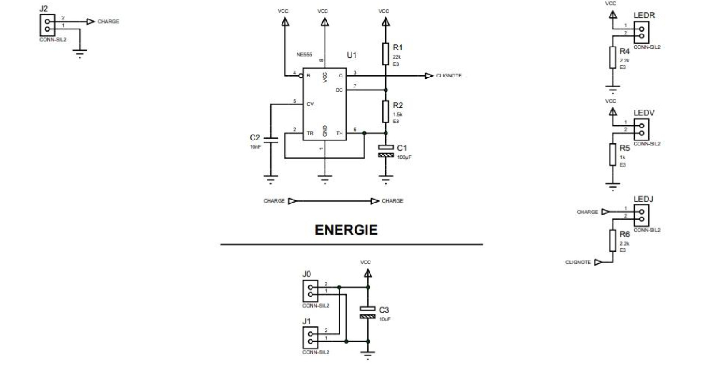
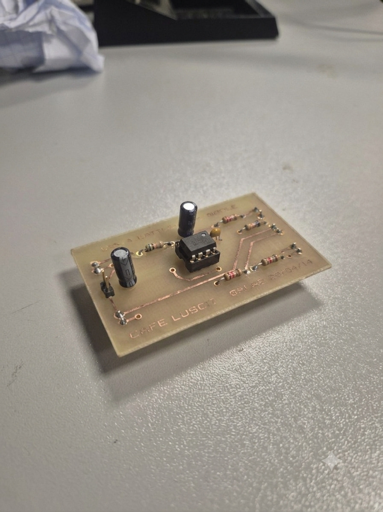
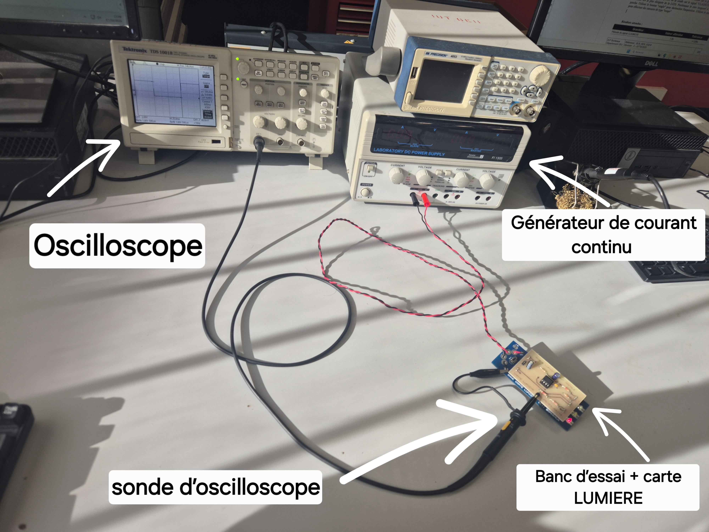
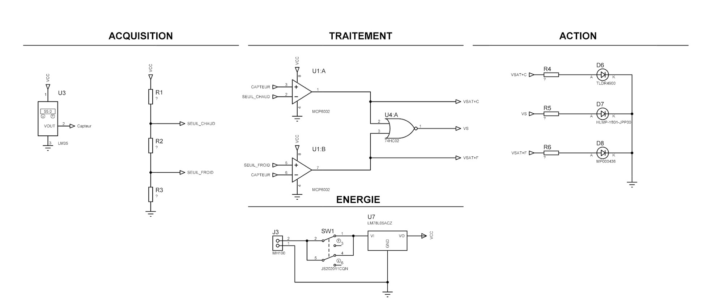
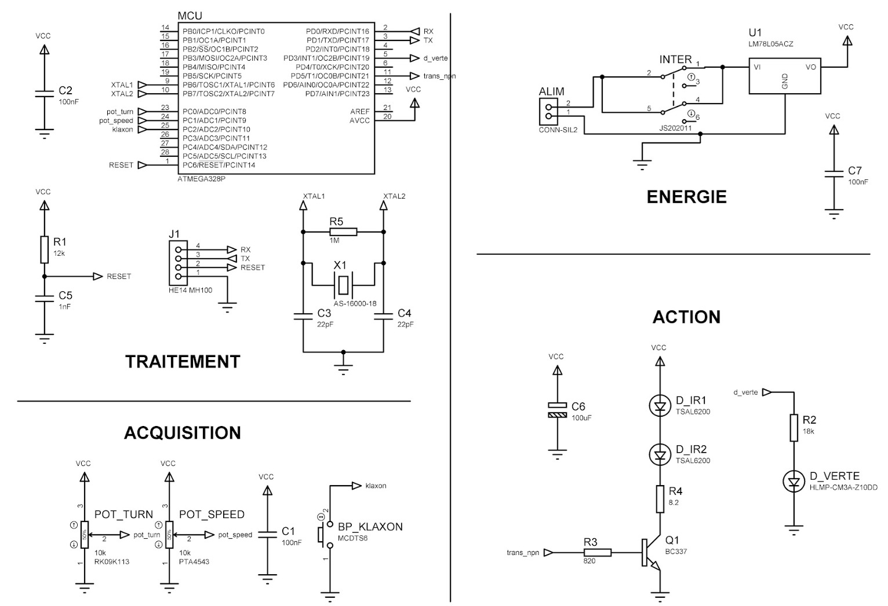

Projets réalisés
Mes réalisations
Ce premier projet de S1 portait sur la conception, la fabrication et la vérification du bon fonctionnement d'une carte électronique embarquée sur une maquette de Rafale. L'objectif était de concevoir un système complet intégrant deux fonctions distinctes, de la spécification jusqu'à la réalisation physique de la carte.
- Partie Son — émission d'un son de turboréacteur, restituant l'ambiance sonore caractéristique de l'appareil
- Partie Lumière — clignotement de LEDs à fréquence fixe, simulant les feux de signalisation de l'avion
Chaque étape de ce projet a été accompagnée de la rédaction de dossiers techniques associés, retraçant l'intégralité de la démarche d'ingénierie suivie.

Rafale assemblée

soudée

routage PCB
Le second projet de S1 consistait en la conception, la fabrication et la vérification du fonctionnement normal d'un prototype de thermomètre de bain destiné à sécuriser le bain d'un bébé. Le système devait traduire une mesure de température en une indication visuelle simple et immédiatement compréhensible.
- LED bleue — s'allume lorsque la température est inférieure à 36 °C (eau trop froide)
- LED verte — s'allume lorsque le capteur détecte une valeur comprise entre 36 °C et 39 °C (température idéale)
- LED rouge — s'allume lorsque la température dépasse 39 °C (eau trop chaude)
Comme pour le premier projet, chaque étape a été accompagnée de la rédaction de dossiers techniques formalisant la démarche de conception jusqu'à la validation finale.

final assemblé

de température

en cours de soudage
Unique projet de Situation d'Apprentissage et d'évaluation 5 (SAE) du S2, ce projet consiste en la conception, la fabrication et la vérification du fonctionnement d'un kart à hélice télécommandé. Le système repose sur deux cartes électroniques distinctes communiquant entre elles à distance pour piloter l'ensemble des actionneurs du kart.
- Carte émettrice — intégrée à la télécommande, contrôlée manuellement par l'utilisateur
- Carte réceptrice — située sur le châssis du kart, connectée à l'ensemble de ses périphériques
- Communication — l'émetteur envoie des trames NEC par ondes infrarouges vers le récepteur, qui convertit ces informations et les transmet au moteur, aux LEDs, au servomoteur ou encore au Buzzer pour piloter le kart à distance
Comme pour les projets précédents, chaque étape est accompagnée de la rédaction des dossiers techniques retraçant la démarche de conception, de fabrication et de vérification du système complet.

assemblé

télécommande

sur le châssis